MMEDIT: A Unified Framework for Multi-Type Audio Editing via Multimodal language model
Abstract
Text-guided audio editing requires modifying specific acoustic events while strictly preserving non-target content. Current approaches generally fall into two paradigms: training-based methods, which are often confined to limited operation types, and training-free methods based on diffusion inversion, which frequently struggle with controllability and signal degradation. To overcome these constraints, we propose MMEdit, a unified, large-model-driven framework that significantly expands the scope and precision of audio editing. We systematically extend task definitions to cover a comprehensive range of operations,including addition, replacement, removal, reordering, and attribute modification. Furthermore, we construct a scalable synthetic pipeline to generate large-scale paired data with fine-grained event-level annotations. To capture complex editing semantics, we integrate the Qwen2-Audio encoder with an MMDiT-based generator, achieving precise cross-modal alignment and localized editing. Experiments demonstrate that our approach delivers superior edit localization, robust instruction following, and high fidelity in non-edited regions, highlighting the potential of large-scale models for controllable audio editing.
Scalable Data Pipeline

To overcome the data scarcity bottleneck in audio editing, we construct a large-scale synthetic dataset comprising over one million triplets. Our pipeline begins by extracting clean, event-level segments from AudioCaps using automated grounding (TAG) and semantic filtering (CLAP). We then leverage the Scaper library to compositionally synthesize these segments into realistic soundscapes. This allows us to systematically simulate six diverse editing operations: Addition, Removal, Replacement, Reordering, Loudness Adjustment, and Speed Modification. This automated process ensures fine-grained event-level annotations, forming a solid foundation for training controllable editing models.
Method Overview
MMEdit synergizes the Qwen2-Audio multimodal encoder with an MMDiT-based diffusion backbone. Unlike standard approaches, it leverages joint attention mechanisms to facilitate deep, token-level interaction between audio latents and editing instructions. The model employs the powerful Qwen2-Audio for joint understanding of audio and instruction, generating the high-level multi-modal representation $\mathbf{H}$. Then the MMDiT backbone predicts the audio latent $\mathbf{z}_0$ from a Gaussian latent conditioned on $\mathbf{H}$ and the latent of the source audio $\mathbf{z}_\mathrm{in}$. Finally, the VAE decoder converts $\mathbf{z}_\mathrm{0}$ to the edited audio.
🎧 Audio Editing Samples
Select a task below to view examples.
➕ 1. Addition
Insert a new target sound into the audio while preserving the original context.
| Instruction | Source Audio | AUDIT | AudioEditer | MMEdit(ours) |
|---|---|---|---|---|
| Mix in dog barking in the middle. | ||||
| Include typing as a background sound. | ||||
| Incorporate gunshots fired three times from 3.2s to 10.0s. | ||||
| Insert a pig oinks repeatedly sound in the middle. | ||||
| Mix in loud train horn into the background. |
➖ 2. Removal
Remove a specified sound event and keep the remaining audio natural and unchanged.
| Instruction | Source Audio | AUDIT | Audioediter | MMEdit(Ours) |
|---|---|---|---|---|
| Eliminate male giving a speech from the audio. | ||||
| Remove the dog barking. | ||||
| Silence the sound of a person is snoring loudly. | ||||
| Erase the sound of rain falling from the background. |
🔄 3. Replacement
Replace a target sound with a new one at the same time region while preserving the background.
| Instruction | Source Audio | AUDIT | Audioediter | MMEdit(Ours) |
|---|---|---|---|---|
| Take the sound of Quack and turn it into Bell. | ||||
| Replace the electric shaver sound with a busy signal. | ||||
| Swap the male voice on the dispatch radio for a car revving. | ||||
| Find the goat bleats and change it to laughing from an individual. |
🔀 4. Reordering
Change the temporal order of specified events without altering their content.
| Instruction | Source Audio | MMEdit(Ours) |
|---|---|---|
| Swap the order of a man speaking and a drilling sound. | 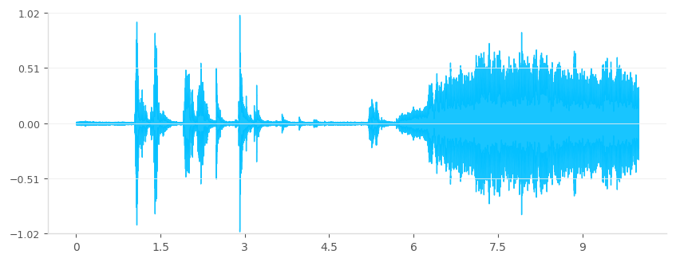 | 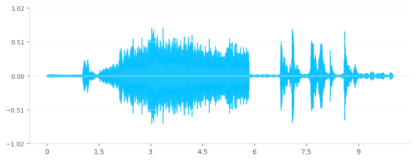 |
| Swap the order of a person types on a computer keyboard quietly and emergency sirens sound. | 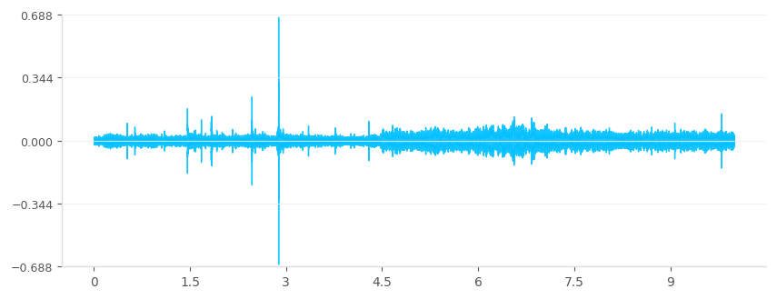 | 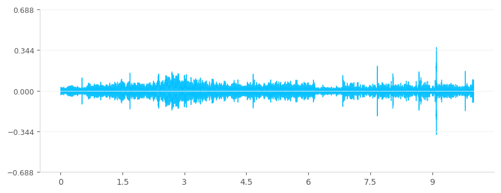 |
| Make a vehicle with a siren play before children cry together. | 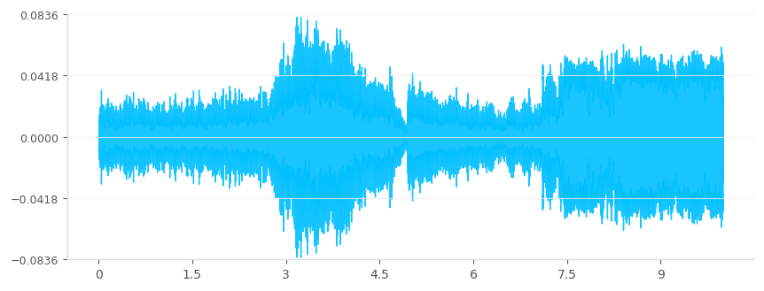 | 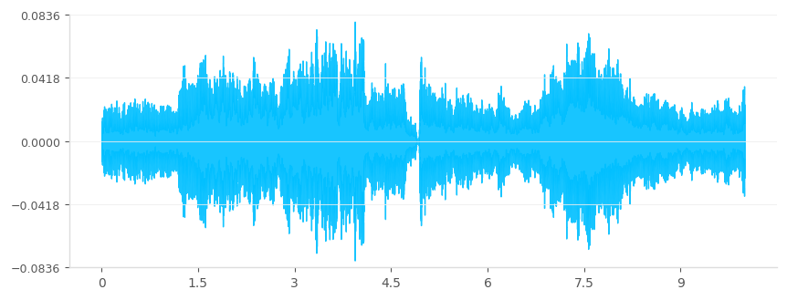 |
| Reorder the static-filled speech and the fast sewing machine noise. | 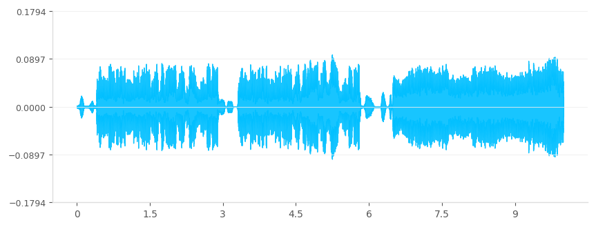 | 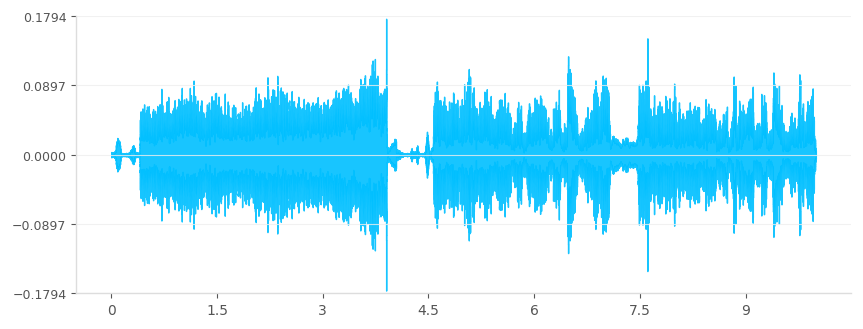 |
🔊 5. Loudness Adjustment
Increase or decrease the volume of a target event while keeping other sounds unchanged.
| Instruction | Source Audio | MMEdit(Ours) |
|---|---|---|
| Turn down the volume of a bell ringing. | 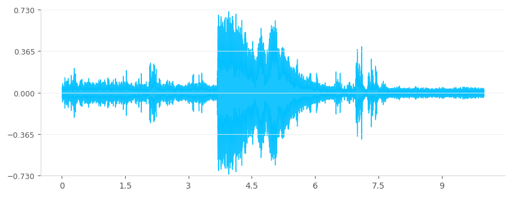 | 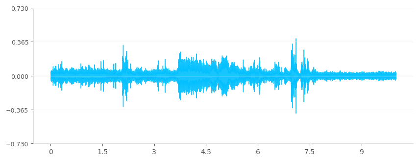 |
| Turn up the sounds of race cars rev in the distance. | 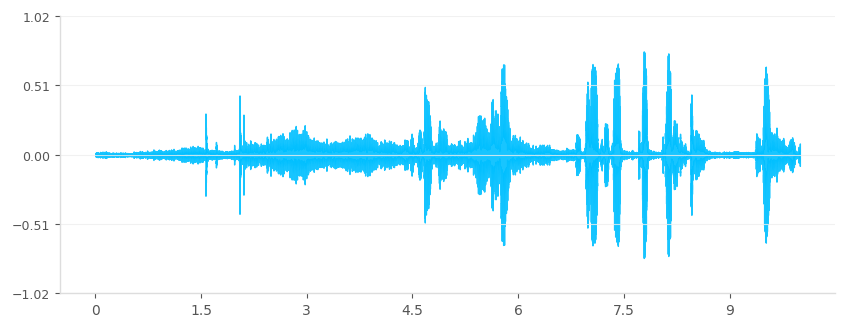 | 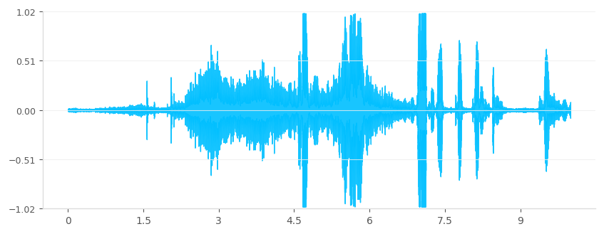 |
| Soften the dog barking. | 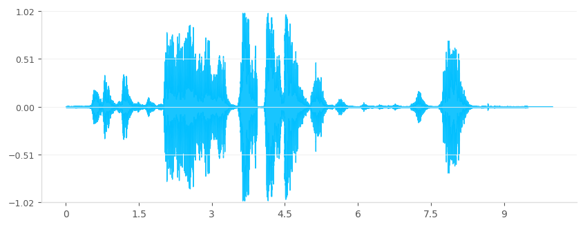 | 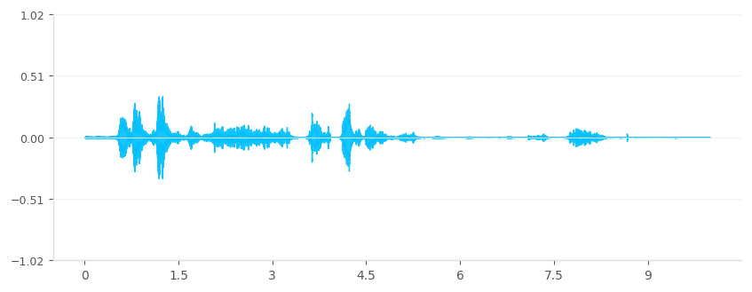 |
| Turn up the volume of the woman speaking. | 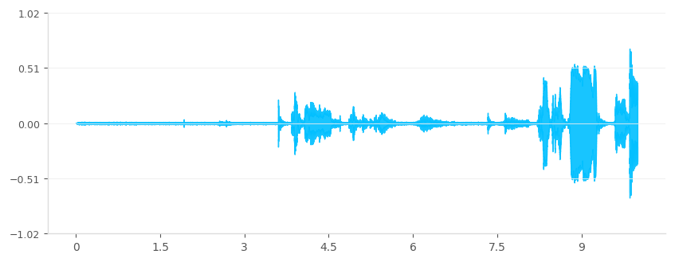 | 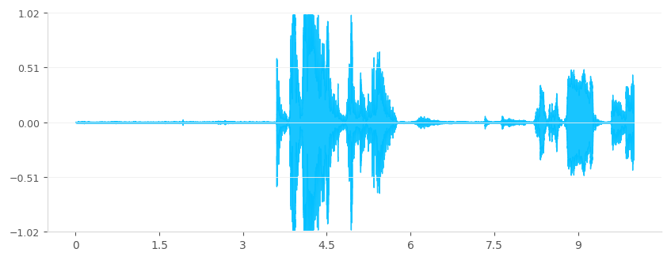 |
⏩ 6. Speed Modification
Speed up or slow down a target event, with its duration adjusted accordingly, while preserving overall audio coherence.
| Instruction | Source Audio | MMEdit(Ours) |
|---|---|---|
| Slow down bell considerably. | 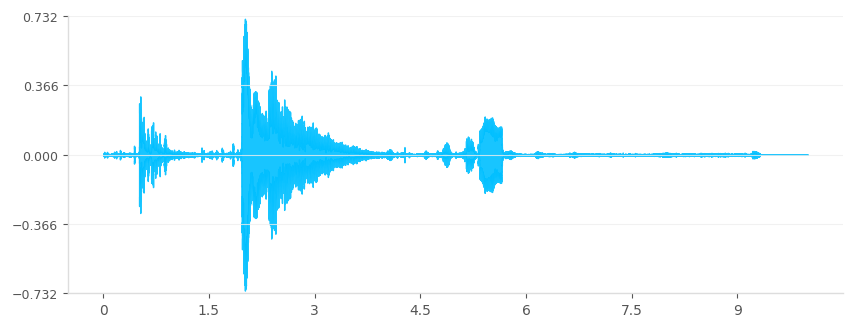 | 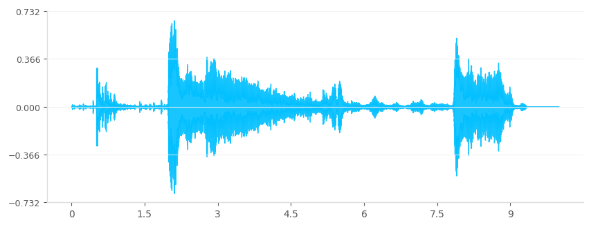 |
| Halve the duration of toilet flushing. | 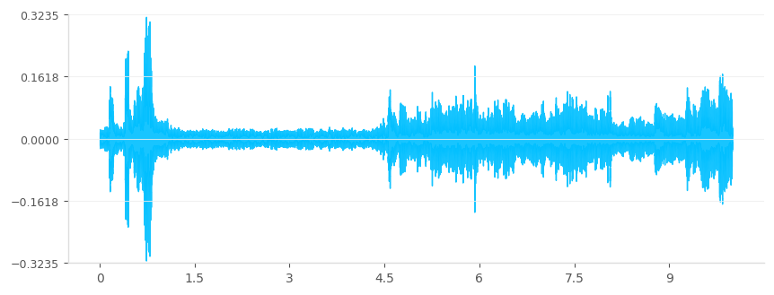 | 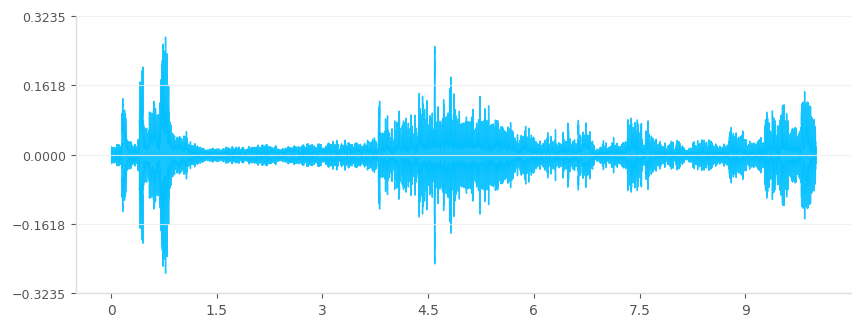 |
| Extend train horn duration by 20%. | 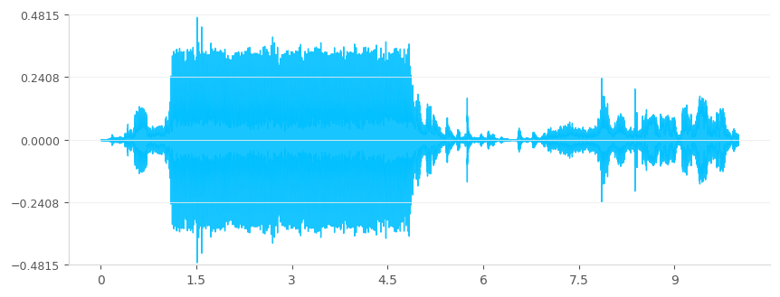 | 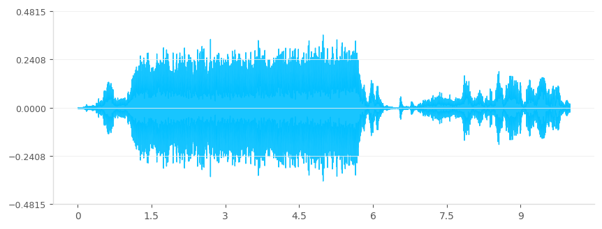 |
| Speed up the sound of housefly. | 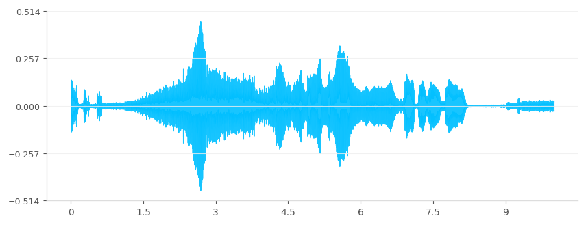 | 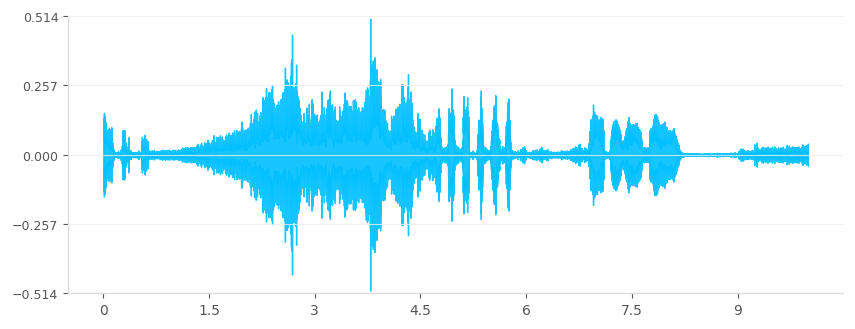 |
BibTeX
@article{YourPaperKey2024,
title={Your Paper Title Here},
author={First Author and Second Author and Third Author},
journal={Conference/Journal Name},
year={2024},
url={https://your-domain.com/your-project-page}
}